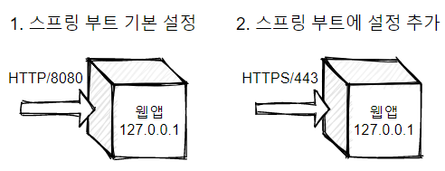
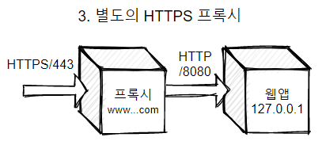
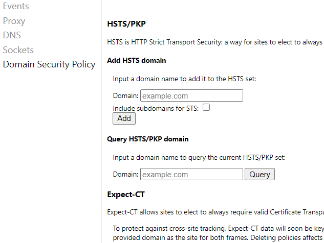
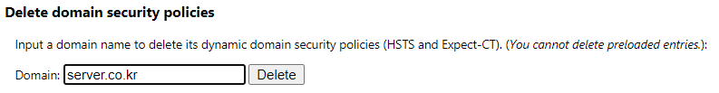

스프링 부트로 웹앱을 만들 경우 기본적으로 HTTP 80 포트에서 실행되는데 웹앱 자체를 수정하지 않고 Node http-server 모듈을 활용하여 로컬 개발 환경에서 자체 서명한 TLS/SSL 인증서를 만들고 HTTPS 443 포트를 프록시로 웹앱 앞 단에 두는 방법을 알아본다.
이렇게 구성하는 이유는 다음과 같다.
- 개발 환경이라도 요즘 실제 도메인을 필요로 하는 외부 API를 사용하기 위해서라든지 도메인과 HTTPS가 필요한 경우가 흔하다.
- 운영 환경이 그러한 경우가 많다. 스프링 부트 앱을 수정할 경우 운영 환경에서는 또 다른 설정이 필요할 수 밖에 없고 설정 관리가 번잡해진다.
일반적으로 스프링 부트 웹앱은 기본 설정에서는 그림 1과 같이 HTTP 80 포트에서만 서비스가 실행되지만 그림 2와 같이 별도 설정을 통해 HTTPS 서비스도 가능하다.

여기서는 아래 그림 3과 같이 구성하는 방법을 설명하고자 한다. 로컬 개발 환경에 스프링 부트 웹앱 앞에 사설 TLS 인증서를 사용하는 HTTPS 프록시를 두는 것이다.

운영 환경에서는 프록시로 Apache 웹서버를 두는 경우가 많지만 로컬 개발 환경에서는 Node의 http-server 모듈을 사용하면 훨씬 간편하다. 개발 환경에서 사용할 수 있는 HTTP 서버는 이 외에도 몇 가지가 더 있지만 Node http-server는 설치, 설정이 간편하다.
1. 원하는 도메인의 TLS/SSL 사설 인증서 발급
TLS/SSL 사설 인증서 발급은 일반적으로 OpenSSL 유틸리티를 사용하는데 윈도에서는 없기 때문에 다른 방법으로 파워셸을 사용한다든가 별도의 외부 유틸리티를 사용한다든가 여러 가지 방법이 있다. 여기서는 OpenSSL을 사용하겠다. 요즘 개발자들은 Git을 많이 사용하는데 윈도용 Git을 설치한 경우 Git Bash에서 OpenSSL을 실행할 수 있다.
아래와 같이 openssl 명령으로 유효기간 3650일짜리 cert.pem이라는 인증서를 만들어낸다. 인증서 정보 입력에서는 모두 엔터를
입력해도 무방하고 Common Name 질문에 대해서는 원하는 도메인을 입력하도록 한다.
$ openssl req -newkey rsa:2048 -new -nodes -x509 -days 3650 -keyout key.pem -out cert.pem
Generating a RSA private key
..........+++++
......+++++
writing new private key to 'key.pem'
-----
You are about to be asked to enter information that will be incorporated
into your certificate request.
What you are about to enter is what is called a Distinguished Name or a DN.
There are quite a few fields but you can leave some blank
For some fields there will be a default value,
If you enter '.', the field will be left blank.
-----
Country Name (2 letter code) [AU]: ENTER
State or Province Name (full name) [Some-State]: ENTER
Locality Name (eg, city) []: ENTER
Organization Name (eg, company) [Internet Widgits Pty Ltd]: ENTER
Organizational Unit Name (eg, section) []: ENTER
Common Name (e.g. server FQDN or YOUR name) []: server.co.krENTER
Email Address []: ENTER
2. hosts 파일에 도메인 추가하기
윈도인 경우 Windows\system32\drivers\etc\hosts 파일, 유닉스 계열인 경우 /etc/hosts 파일에
아래와 같이 사설 도메인을 추가하도록 한다.
127.0.0.1 server.co.kr
아는 사람은 알겠지만 윈도에서는 보안상 탐색기에서 해당 파일 경로를 찾아들어갈 수 없다. 텍스트 편집기에서 파일을 열 때 경로를 다 써주는 방법으로 열도록 한다.
3. Node http-server 구동하기
아직 Node를 가지고 있지 않다면 Node 웹사이트 안내에 따라 설치한다. Node는 있으나 http-server 모듈이 없다면 아래와 같이 명령을 실행하여 모듈을 설치한다.
npm i -g http-server
이제 아래와 같이 http-server를 구동한다. 앞서 만든 cert.pem 파일을 인증서로 사용하고 HTTPS 포트인 443 포트를 통해
서비스하며 요청 받은 URL이 현재 폴더에 없는 경우 트래픽을 http://localhost:8080으로 전달한다.
아마 일반적으로 스프링 부트 웹앱을 띄웠다면 이 주소가 웹앱 주소일 것이다.
npx http-server -S -C cert.pem -p 443 -P http://localhost:8080
이제 아래와 같이 웹서버가 구동될 것이다. 127.0.0.1 외에도 컴퓨터에서 사용하는 모든 IP에서 443 포트가 열리는 것을 볼 수 있다.
Starting up http-server, serving ./ through https
Available on:
https://172.29.96.1:443
https://192.168.56.1:443
https://127.0.0.1:443
Hit CTRL-C to stop the server
4. 웹 브라우저에서 확인
이제 브라우저 주소란에 https://server.co.kr과 같이 입력하면 처음 한번은 유효하지 않은 인증서라는 경고가 뜰 것이다. 일반적으로 “고급” 단추를 누르고 위험을 감수하고 계속 진행하겠다는 선택을 하면 되지만 이게 아니라 HSTS 자가 서명 인증서(self signed certificate) 오류가 발생할 수 있다.
화면에서는 이를 무시하고 건너뛸 수 없게 돼 있지만 웹킷 기반의 크롬, 에지 브라우저나 파이어폭스에서는 방법이 있다.
크롬, 에지에서는 주소란에 chrome://net-internals/#hsts를 입력한다. 아래와 같은 내부 설정 화면이 열린다.

이 화면에서 Query HSTS/PKP domain을 통해 내 도메인이 차단되었는지를, Delete domain security policies를 통해 차단된 도메인을 크롬에서 삭제할 수 있다. 아래와 같이 원하는 도메인을 입력하고 Delete 단추를 누른다.

기타 이야기 거리
이상으로 설명한 방법은 로컬 개발 환경에서도 실운영 환경처럼 도메인 주소 기반으로 웹 사이트를 개발할 수 있으며 Apache를 설정한다거나 외부 프록시를 두지 않아도 된다는 점이 장점이라 할 수 있다. 좀더 본격적으로 하자면 가상 머신을 띄워 프록시와 웹앱 서버를 분리하는 방법도 있을 수 있으나 대부분은 이런 번거로운 방법을 쓰고 싶지 않을 것이다.
보안상 도메인이 필요한 API라든가 URL 리디렉션, URL 검증 등 다양한 경우에 대해 개발 환경과 운영 환경을
일치시킬 수 있다. 다만 Java 서블릿 API에서 request.getRequestURL() 등 몇 가지 API는 원하지 않은 결과가
나오므로 주의해야 한다.